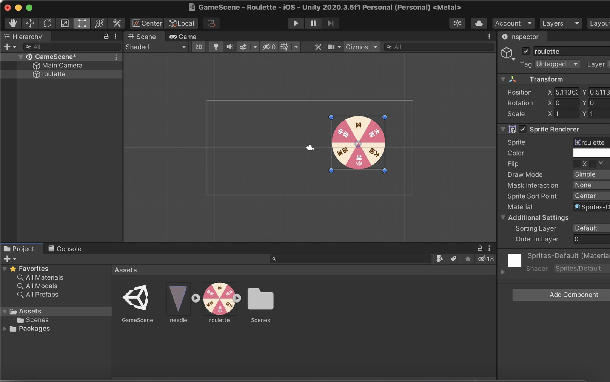
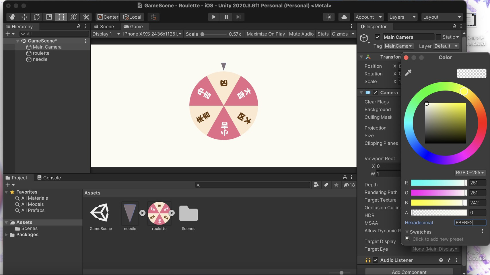
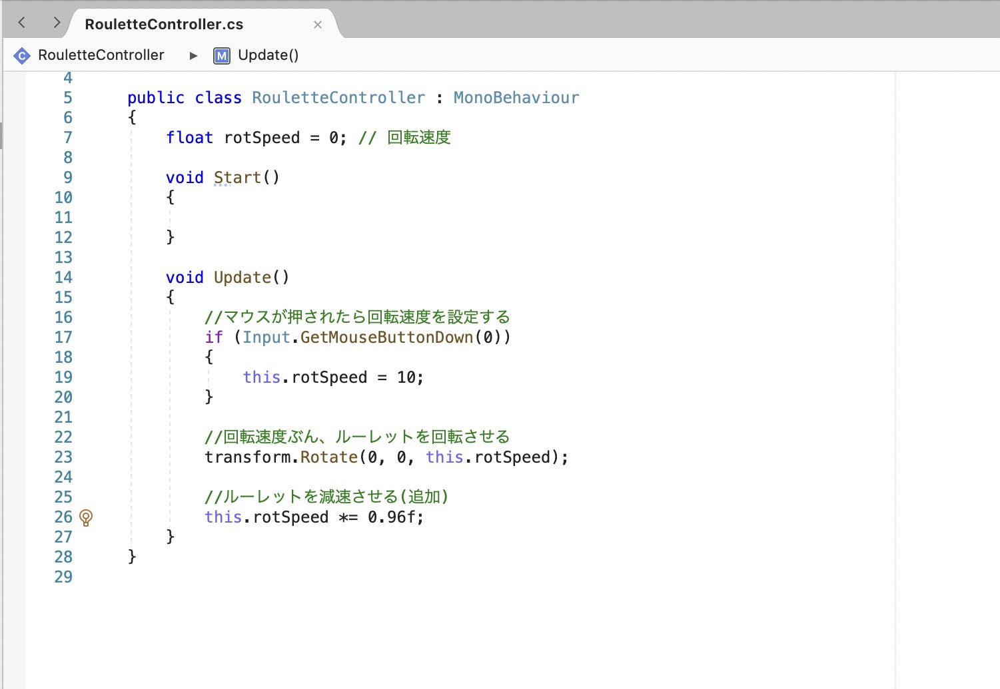

素材をシーンに追加
使用する素材をプロジェクトウィンドウにドラッグ&ドロップします。
同じようにルーレットの素材をシーンウィンドウにドラッグ&ドロップします。
同様にルーレットの針をシーンウィンドウにドラッグ&ドロップします。
オブジェクト(素材)の位置調節
インスペクターウィンドウのTransform項目でで、追加したオブジェクト(素材)のXYZの数値を以下の値に設定する。
ルーレット(0,0,0)
針(0,3.2,0)
背景色変更
ヒエラルキーウィンドウでMain Cameraを選択する。
インスペクターウィンドウのCamera項目のBackgroundのカラーバーをクリックし、Colorウィンドウを表示。
Hexadecimalを「FBFBF2」に設定。
スクリプト作成
プロジェクトウィンドウ上で右クリックし、Create→C#Scriptを選択する。
ファイルを作成したらダブルクリックして開き、画像の通りコードを入力する。
ルーレットにスクリプトをアタッチする
ヒエラルキーウィンドウのルートオブジェクトを選択する。
スクリプトをヒエラルキーウィンドウのルーレットオブジェクトにドラッグ&ドロップします
スマートフォンで動かしてみる
iPhone上でテストしてみました
花も回してみました～✿